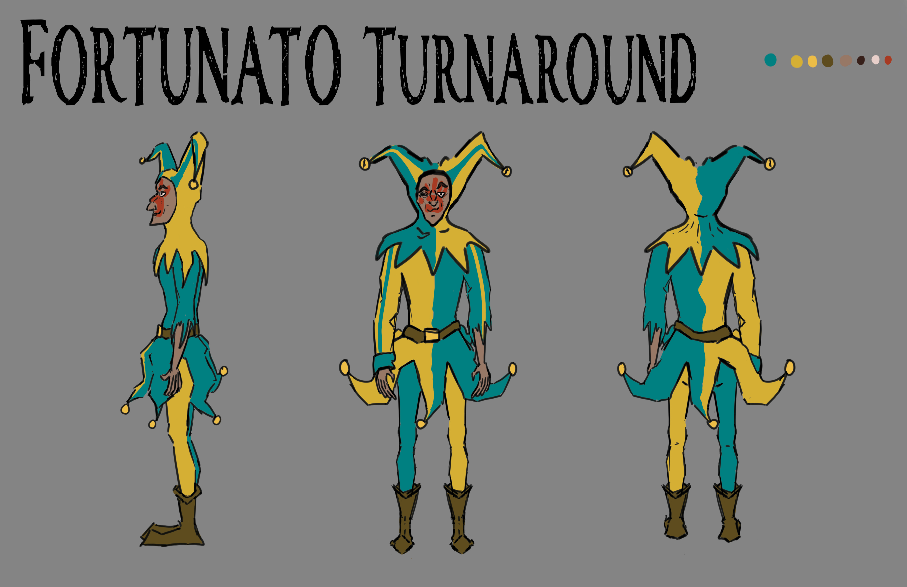

As part of my senior capstone project at Seton Hill University, I took a character from concept to 3D modeling and animation, going through the full process of character creation as well as all the difficulties that come with it. I took heavy inspiration from the game Ravenswatch, made by Passtech Games, where they pull famous literary characters and interpret them into something new for their playable heroes.
In my case, I took the tragically killed character from Edgar Allen Poe's The Cask of Amontillado, Fortunato, and did the same. From descriptions in the story, I dressed him as Poe describes, "in Motley". I took liberty in the colors and details, as there isn't anything to go off of and I obviously wanted the design to be my own. The red handprint on his face is a symbol of his death, typically used in popular culture to indicate murder. I also gave him sharp features and a gaunt appearance. This is contrary to a lot of depictions of the character, who is usually represented as having a large figure, but I felt this showed a level of pretentiousness and high thinking of one's self that he has in his own story.